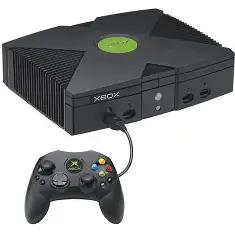
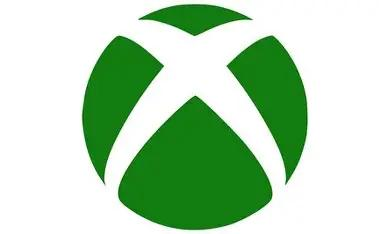
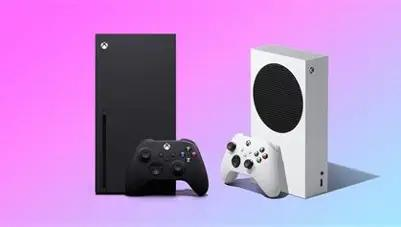
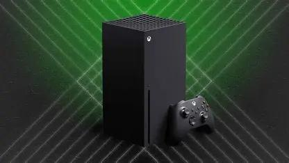
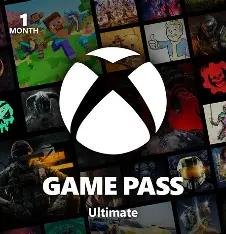
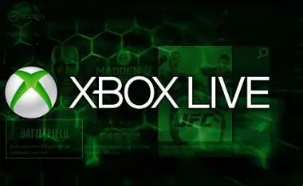
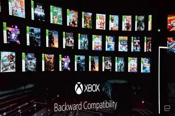

Xbox (2001)
The original Xbox was Microsoft's first home console and introduced Xbox Live, revolutionizing online multiplayer gaming.

Discover how Microsoft transformed the gaming industry, from the original Xbox to the powerful Xbox Series X/S.
From the original Xbox to the Xbox Series X and Series S, Xbox has introduced powerful hardware, online gaming through Xbox Live, and services like Game Pass that changed the way people play.

Xbox is Microsoft's gaming brand and one of the biggest names in the video game industry. Since the release of the original Xbox in 2001, the platform has focused on innovation, online gaming, and services that make games more accessible to players around the world.

The original Xbox was Microsoft's first home console and introduced Xbox Live, revolutionizing online multiplayer gaming.
The Xbox 360 was a major success and became one of the most popular consoles of its generation. Also, it introduced the Kinect motion-sensing device and expanded the Xbox Live service.
Xbox One focused on entertainment, multimedia features, and backward compatibility with previous Xbox titles.
A compact and affordable next-generation console designed for digital gaming. It offers fast load times, high-quality graphics, and access to the Xbox Game Pass library.

The Xbox Series X is the most powerful console in the Xbox lineup, offering cutting-edge performance and a seamless gaming experience. Also, it supports 4K gaming, ray tracing, and backward compatibility with thousands of Xbox titles.
Xbox is known for its incredible exclusive games. These titles have helped define the brand and attract millions of players worldwide.
Join Master Chief as he fights to save humanity from the Covenant.
A story-driven survival adventure set in a post-apocalyptic world.
Race through the open world of Horizon and experience the thrill of driving fast cars.

Get access to hundreds of games with a monthly subscription.

Play online with friends and join a global gaming community.

Play thousands of classic Xbox games on your modern console.
Take our quiz and receive a personalized recommendation.
Find Out Now!